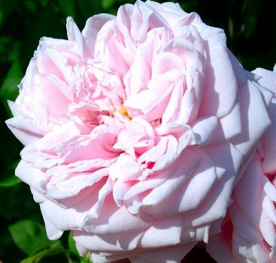
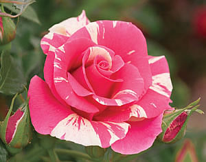

Climbing Roses
Tweet Follow @111iamtestThose climbing roses whose names start with 'Climbing' or 'Cl' are sports (genetic mutations of the bush varieties of the same name). They generally have a heavy spring bloom followed by scattered blooms throughout the season. The individual blooms on climbing roses can be of a finer quality and larger than those of the bush form. Climbing roses whose names are not prefaced with ‘Climbing’ or 'Cl' are bred by crossing two roses. They generally have a heavy spring crop followed by a better repeat bloom and usually a good fall crop of blooms with a few exceptions. A few seedling Climbing roses bloom only once and are so noted. Climbing roses are a diverse group with many different heritages, which makes this a wonderfully useful collection of roses. Large flowered climbing roses differ from Ramblers in that they have fewer, yet larger blooms (4-6 inches in size) and are not quite as vigorous.

Awakening
This climbing rose was discovered by Jan Bohm in 1935, introduced in United Kindom by Peter Beales Roses, and introduced in Canada by Hortico in 1992. It is a tall, vigorous, and bushy plant, spreading 10 x 8 feet. It has a medium, light green, and glossy foliage. It produces light pink, quartered blooms, 26 to 40 petals each. The rose possesses a moderate fragrance. Awakening is a very hardy rose.

Candy Land
This climbing rose was hybridized by Carruth in 2008. It grows 10 to 12 feet in height, and has a glossy, apple green foliage. It produces hybrid tea shaped, beautiful, pink striped with ivory yellow blooms, 25 petals each. The rose possesses a moderate, apple-like fragrance. This is one showy rose. Not only are the flowers striking, but the foliage is extremely lush, glossy, and attractive. This rose also blooms and reblooms well the very first year.